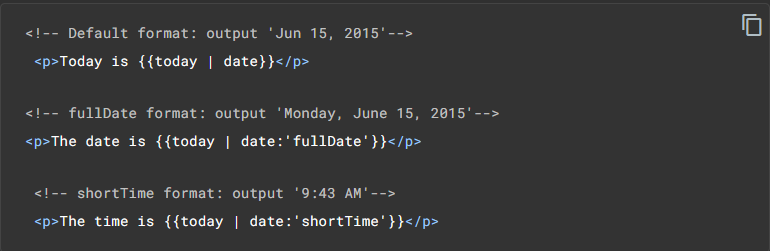

<main class="pipes-main py-4">
    <div class="pipes-container">
        <h2>Pipes</h2>
        <hr style="border-color: rgb(117, 117, 117);">
        <p>
            Em Angular, as pipes permitem que você declare transformações de valor de exibição no HTML do seu modelo. Uma classe com o decorador <code>@Pipe</code> define uma função que transforma valores de entrada em valores de saída para exibição em uma visualização.
        </p>
        <p>
            O Angular define várias pipes, como a pipe de dados e a pipe de moedas; para obter uma lista completa, consulte a <a href="https://angular.io/api?type=pipe" target="_blank">Pipes API</a>. Você também pode definir novas pipes.
        </p>
        <p>
            Para especificar uma transformação de valor em um modelo HTML, use o operador de barra vertical (|).
        </p>
        <p>
            <code ngNonBindable>{{valor_interpolado | nome_da_pipe}}</code>
        </p>
        <p>
            Você pode encadear pipes, enviando a saída de uma função de pipe para ser transformada por outra função de pipe. Um pipe também pode receber argumentos que controlam como ele realiza sua transformação. Por exemplo, você pode passar o formato desejado para a pipe de datas (date). 
        </p>
        
    </div>
</main>
